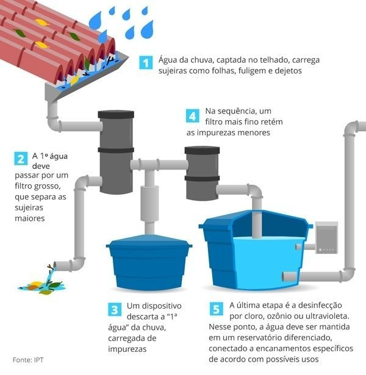
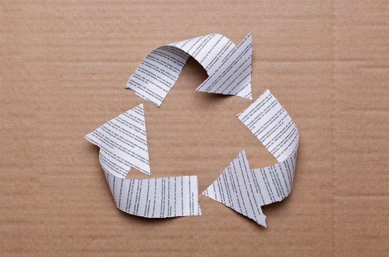
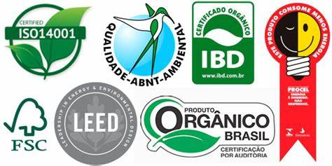

Práticas sustentáveis são aquelas que visam minimizar o impacto ambiental e social de uma atividade ou estilo de vida, garantindo a preservação dos recursos naturais e a qualidade de vida das pessoas envolvidas.
Algumas práticas sustentáveis incluem:
- Redução do consumo de energia: Utilizar fontes renováveis de energia, como a solar e a eólica, e reduzir o uso de aparelhos elétricos desnecessários.
Redução do consumo de água: Utilizar tecnologias e práticas para reduzir o uso de água, como o aproveitamento da água da chuva e o uso de sistemas de irrigação eficientes.

Redução do consumo de papel: Optar por alternativas digitais, como e-mails e documentos eletrônicos, e utilizar papel reciclado e de fontes sustentáveis.

Compra de produtos sustentáveis: Escolher produtos que tenham menor impacto ambiental, como os orgânicos, os de produção local e os com certificação ambiental.

